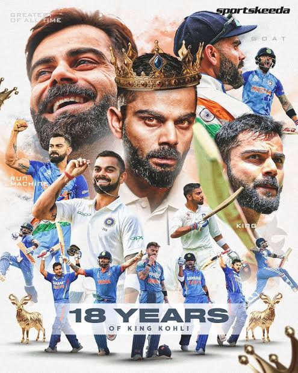

Virat Kohli born 5 November 1988 is
an Indian international cricketer and former all-format captain of the
Indian national cricket team. He is a right-handed batter and an
occasional right-arm medium-pace bowler. Considered one of the greatest
batters in cricket, he has been acclaimed for his batting skills and
records.
Kohli has the most centuries in ODIs and the second-most
centuries in international cricket with 86 tons across all formats. He is
also the leading run-scorer in the Indian Premier League.
Kohli was the captain of the 2008 U19 World Cup winning team and was a
crucial member of the Indian teams that won 2011 Cricket World Cup, 2013 Champions Trophy, 2024 T20 World Cup, and 2025 Champions
Trophy.
He plays for Royal Challengers Bengaluru in the Indian Premier League and
for Delhi in domestic cricket. In 2013, Kohli was ranked number one in the
ODI batting rankings.
In 2015, he achieved the same in T20I cricket. In 2018, he was ranked
number one in Test cricket, making him the only Indian to hold the top
spot in all three formats. He is the first player to score 20,000
international runs in a decade. He was the Cricketer of the Decade for
2011 to 2020. Kohli has won ten ICC Awards, making him the most awarded
player in international cricket history. He won the ODI Player of the Year
award four times, in 2012, 2017, 2018, and 2023.
He won the Cricketer of the Year award on two occasions, in 2017 and
2018.
In 2018, he became the first player to win all three major ICC awards
including Cricketer of the Year, ODI Player of the Year and Test Player of
the Year in the same year.
He was honored with the Spirit of Cricket Award in 2019 and given the
Cricketer of the Decade and ODI Cricketer of the Decade in 2020.
Kohli was named the Wisden Leading Cricketer in the World for three
consecutive years.
# 2013 – Arjuna Award, second highest sporting honour.
# 2017 – Padma Shri, India's fourth highest civilian
award.
# 2018 – Rajiv Gandhi Khel Ratna Award,
India's highest sporting honour